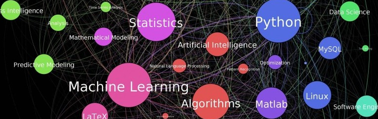

I am a data science enthusiast. Recently, I have been working on
projects that aimed at improving the efficiency and quality of healthcare delivery.
I developed machine learning based predictive models to prevent
hospital readmissions using R. In my current position
as graduate research graduate in
New England VERC, I am developing staffing
models for anticoagulation clinics in six states of the New England with
ultimate goal of spreading nationally. I developed a semi-automated tool that calculates staff mix using R shiny and VBA.
In my dissertation, I built Markov Decision Process (MDP) based model to develop hospital inpatient admission control and patient
transfer policies in a multi-hospital system that can support decision makers in making
inpatient admission and patient transfer decisions.
I have been using several tools for my projects including R, Python, SQL, Matlab, SAS, VBA,
and Simio. To sharpen my data science skills, I have been taking data science
courses from edX and Coursera. I am currently looking for a position as a data scientist.
